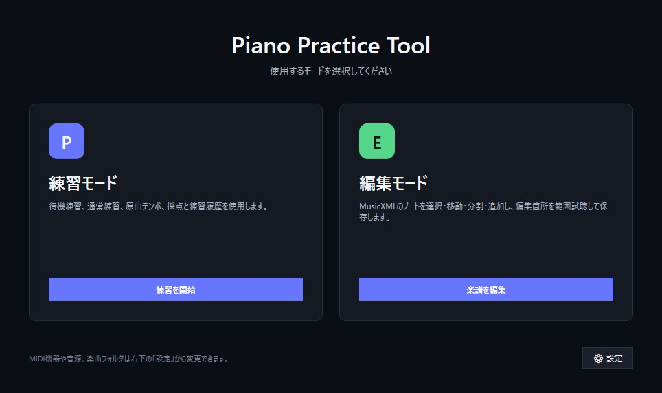
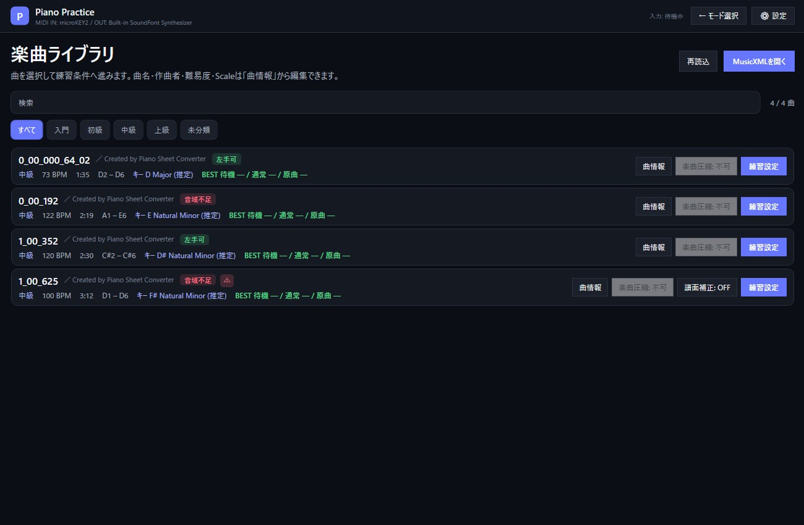
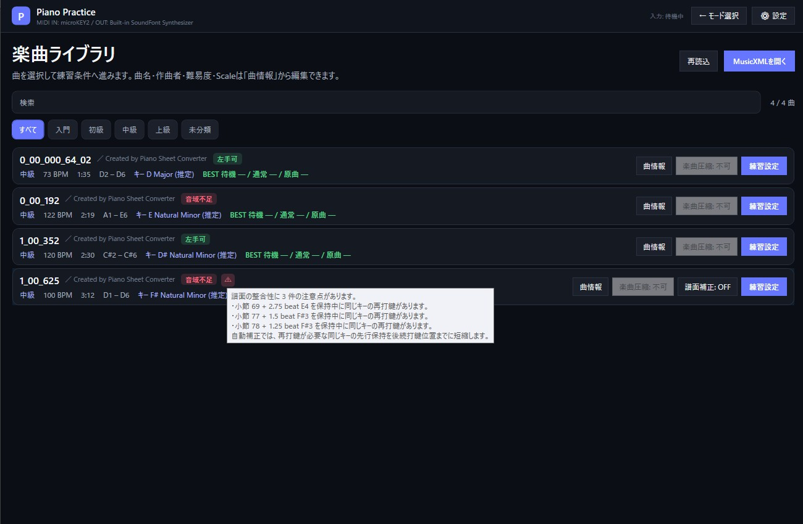
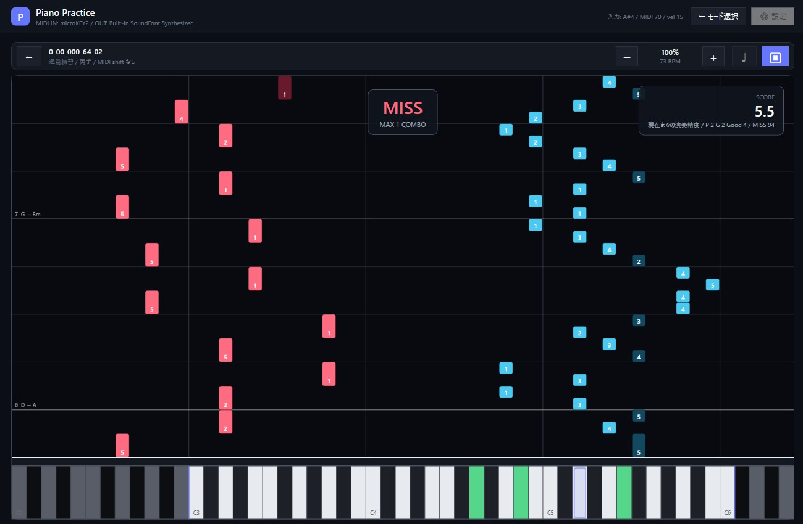
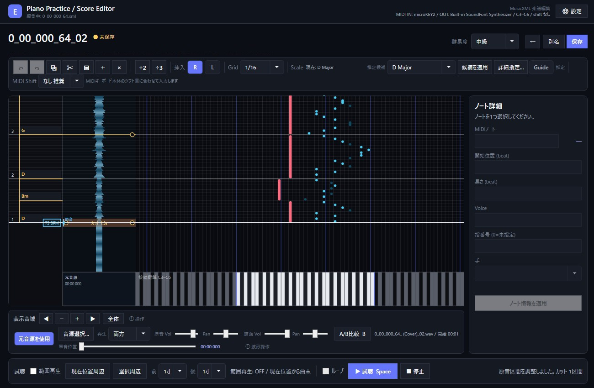
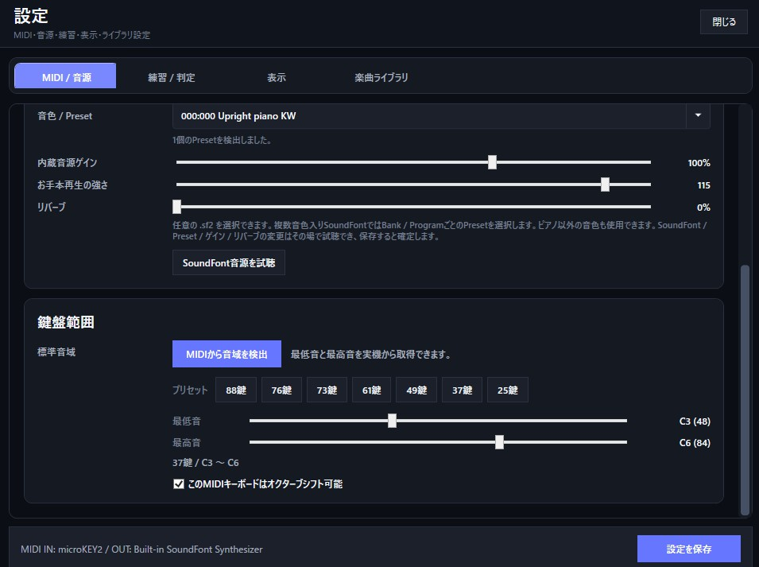

はじめに
練習モード
待機練習、通常練習、原曲テンポ、お手本再生から目的に合わせて選択できます。
編集モード
MusicXMLのノート編集に加え、元音源の波形を見ながら耳コピ位置を合わせ、必要な区間を試聴して保存できます。
MIDI
MIDIキーボードから演奏入力できます。内蔵SoundFont音源または外部MIDI OUTを選択できます。
最初に行うこと
PianoPracticeTool.exeを起動します。- 「設定」を開き、使用するMIDI入力と発音先を選びます。
- 必要に応じて鍵盤範囲を設定します。「MIDIから音域を検出」も利用できます。
- 練習するMusicXMLを
score_dataに入れるか、「楽曲ライブラリ」設定で別のフォルダを追加します。Piano Sheet Converterを使う場合は、同アプリからMusicXMLとしてエクスポートしたファイルを利用できます。 - 起動画面から「練習モード」または「編集モード」を選びます。

楽曲ライブラリ
登録したフォルダ内の .xml / .musicxml をサブフォルダまで検索して一覧表示します。一度解析した曲は内容ハッシュ付きのカタログキャッシュを使用し、MusicXMLや運指情報に変更がなければ練習モード / 編集モードの両方で解析結果を再利用します。
キャッシュはファイルパスと内容のSHA-256を組み合わせて管理するため、同じMusicXMLを「複製して編集」した場合も別ファイルとして扱います。元ファイルが削除された項目は自動整理されます。
検索
曲名・作曲者・ファイル名で一覧を絞り込めます。
難易度
入門・初級・中級・上級・未分類で表示を絞り込めます。
曲情報
曲名、作曲者、難易度、Tonic、Scale種類をまとめて編集できます。
鍵盤範囲
両手 / 右手 / 左手を個別に判定し、圧縮なし・楽曲圧縮ありで意味のある練習方法を小型タグとして並べて表示します。
譜面チェック
同じ鍵を保持したまま再打鍵する等の問題を検出すると警告を表示します。自動補正できる場合は、元のMusicXMLを変更せず練習用データだけ補正できます。
キー / スケール
MusicXMLにkey / modeがあればその情報を表示します。情報が不足していても十分な音情報から判断できる場合は「(推定)」として表示します。
各曲名の横には、現在の鍵盤範囲で利用できる練習方法を小型タグで表示します。たとえば圧縮なしでは右手・左手を別々に練習でき、楽曲圧縮後なら両手でも弾ける場合は、「片手可」と「圧縮で両手可」を併記します。圧縮前後で同じ結果になる情報は重複表示しません。
譜面上に物理的な矛盾の疑いがある場合は ⚠ を表示します。マウスを合わせると、同じ鍵を保持中に再打鍵している位置など、検出した問題の位置と内容を確認できます。自動補正できる曲では「譜面補正」をONにすると、先行する保持時間などを練習用に調整してから練習設定へ進みます。補正後も自動処理できない問題が残る場合は警告を維持します。元のMusicXMLは変更しません。
MusicXMLのstaffは譜面上の配置として扱います。実際の演奏では反対の手で取る方が自然と機械的に判断できる単音については、練習用の左右手割当を自動調整してから運指を作成します。短時間に大きく跳躍する孤立音も、反対の手へ渡すことで前後の移動量を明確に減らせる場合だけ補正します。
自動運指は、1音ずつ独立に決めるのではなく前後の流れをまとめて評価します。保持中の同じ手のノートは指位置を固定し、その保持音を跨いで物理的に成立しない指配置を候補から除外します。黒鍵へ親指を置いたまま白鍵へ出入りする配置や不自然な親指くぐり、不要な手移動を避ける一方、黒鍵オクターブや和音など親指が自然な場合は禁止しません。MusicXMLに運指番号が明示されている音はその指定を保持し、未指定部分だけを補完します。
ライブラリ外のMusicXMLは「MusicXMLを開く」から直接選択できます。上部の「← モード選択」から起動画面へ戻れます。
楽曲圧縮は曲の音をオクターブ単位で移動して現在の鍵盤範囲へ収める機能です。譜面補正は物理的にそのまま弾けない箇所を練習用に補正する機能で、どちらも元のMusicXMLを書き換えません。MIDIキーボード本体のオクターブシフトとも別の機能です。
練習モード
待機練習
正しい鍵盤を弾くまで進行を止めます。音の位置を確認しながら練習したい場合に向いています。
通常練習
ノートの流れに合わせて演奏し、タイミング・誤鍵・見逃しを含めて採点します。
原曲テンポ
楽譜のテンポに合わせて両手で演奏します。
お手本再生
楽譜を自動演奏し、音の流れや運指を確認できます。Spaceキーで再生 / 一時停止 / 再開でき、再生位置スライダーから任意位置へ移動できます。一時停止中はピアノロール上のホイールで1拍ずつ、Shift+ホイールで小節単位に再生位置を動かせます。Rキーで今回の再生開始位置へ戻れるため、同じフレーズを繰り返して暗譜確認できます。
練習前に選べる項目
- 両手 / 右手 / 左手
- 練習範囲
- MIDIキーボード本体のオクターブシフト量
通常練習では演奏画面から速度とメトロノームを調整できます。お手本再生では開始時とシーク後の再開時に1小節のカウントインを行います。通常の練習モードではテンポと速度に応じて1〜2小節のカウントインを行います。
ピアノロールの小節番号にはコード名も表示できます。MusicXMLにコード情報があればそれを優先し、記載がない場合は十分判断できる小節のみ推定して ? を付けます。
練習終了後はスコアと練習結果を確認できます。過去の記録とBESTも楽曲ごとに確認できます。



編集モード
MusicXMLをピアノロールで編集できます。元ファイルを直接編集するほか、複製してから編集することもできます。

| 領域 | できること |
|---|---|
| 編集ツールバー | Undo / Redo、コピー、切り取り、貼り付け、複製、削除、分割、左右手割当、スナップ |
| 左タイムラインレーン | 小節番号、コード名、Tempo変更点を表示します。小節番号は対応する小節の開始線より上側に表示されます。小節番号側のクリックで現在位置を移動し、ドラッグで時間方向へスクロールします。右クリックすると空小節の挿入 / 小節削除 / 拍子変更 / テンポ設定・変更削除を行えます。 |
| ピアノロール | ノート挿入、選択、移動、長さ変更、矩形選択。R / Lで挿入する手を切り替えます。 |
| リズム | 通常グリッドに加えて1/4・1/8・1/16三連を選択できます。MusicXMLに含まれる休符情報は保存時に保持し、ピアノロール上には休符ノードを表示しません。 |
| Key / Scale | 推定候補からScaleを選び、TonicとScale種類を明示修正できます。Major / Minorと各Diatonic Modeのほか、Harmonic / Melodic Minor、Pentatonic、Blues、Whole Tone、Chromaticにも対応します。Scale Guideは各Scaleが有効な時間区間だけ表示します。 |
| コード | 推定コードは控えめな色で表示します。コード名をダブルクリックすると、そのコード開始位置を追加・変更・削除できます。編集対象の有効区間はレーン上で強調表示されます。Hキーを押している間は各コードが有効な時間区間だけ構成音を強調します。 |
| 表示音域 | 表示する鍵盤範囲の移動、拡大、縮小、全体表示 |
| ノート詳細 | MIDIノート、開始位置、長さ、Voice、指番号、手の編集 |
| 試聴 | 範囲再生ON / OFF、現在位置周辺、選択周辺、前後小節数、ループ、再生 / 一時停止 / 再開 / 停止 |
| 作業保存 | 「作業保存」または Ctrl + Shift + S で、MusicXMLを確定せず現在の編集状態を専用の作業ファイルへ保存できます。次回同じMusicXMLを開いたときに、作業を再開するかMusicXMLだけを開くか選べます。 |
| 耳コピ用の元音源 | 「元音源を使用」をONにすると、ピアノロールと同じ時間軸・Grid・現在位置線を共有する波形レーンを表示します。複数の同期ポイントでMusicXMLと元音源を合わせ、ピアノアレンジに含めないイントロ / 間奏 / アウトロ等は「カット」として非破壊で保持できます。譜面 / 原音 / 両方の再生、個別音量・Pan、A/B比較にも対応します。OFFではレーンと関連操作を非表示にします。 |
耳コピ用の元音源を合わせる
元音源同期は、音声ファイルを切ったり書き換えたりせず、譜面の位置と元音源の時刻の対応だけを記録します。原曲とピアノアレンジの構成が違う場合でも、元音源を残したまま編集できます。
- 「元音源を使用」をONにして、耳コピ元の音声ファイルを選びます。
- 曲頭の位置が違う場合は、波形レーンを Shift + ドラッグして開始位置を合わせます。
- 途中の位置合わせが必要な場所は Alt + クリックで同期ポイントを追加します。追加位置は現在のGridへスナップし、再生位置は移動しません。
- 同期点の間に、原曲にはあるがピアノアレンジには含めない間奏などがある場合は、その区間で Shift + ドラッグします。余った元音源部分は「カット」として帯表示されます。
- 「両方」再生またはA/B比較で結果を確認します。同期再生ではカット区間を待たずに即時スキップします。
「カット」は元音源ファイルの削除ではありません。波形レーンのカット帯をクリックしたり、原音を直接再生したりすれば、カット対象になった元音源もいつでも確認できます。
編集を中断するとき: 上部の「作業保存」を使用すると、MusicXML本体を変更せずに現在の編集途中状態を保存できます。作業ファイルには編集中の譜面、難易度、元音源設定、カーソル位置、Grid、選択、表示範囲などが含まれます。次回同じMusicXMLを編集すると「作業データを読み込みますか？」と確認されるので、再開する場合は読み込み、元のMusicXMLからやり直す場合はMusicXMLのみを選びます。MusicXMLが作業保存後に外部変更されている場合は警告します。
範囲再生OFFでは現在位置から曲末まで試聴します。範囲再生ONでは「現在位置周辺」または「選択周辺」を基準にし、前後0 / 1 / 2 / 4小節から範囲を作成できます。Spaceキーは再生 / 一時停止 / 再開として動作します。
左タイムラインレーンのドラッグ操作は設定で「タッチスクロール（惰性あり）」または「直接追従（離した位置で停止）」を選択できます。右クリックメニューや拍子 / Tempo編集を閉じた後も、そのままホイールやショートカット操作を続けられます。ピアノロール上では Alt + 左ドラッグ、または中ボタンドラッグで時間・音域方向へ盤面を移動できます。音域方向のパンは設定から無効化できます。
小節を挿入すると後続のノート、コード、Tempo、Key / Scaleも同じ小節長だけ後ろへ移動します。小節を削除すると対象小節の内容を取り除き、後続を前へ詰めます。拍子を変更した場合も小節長に合わせて後続位置を自動調整します。Tempo変更点はBPM値としてタイムライン上に表示されます。最後に残る1小節は削除できません。
耳コピ用の元音源: MusicXMLと録音は複数の同期ポイントで対応付けます。原音0秒と原音ファイル末尾を固定端とし、譜面側には開始位置と終了位置を持ちます。Shift+ドラッグはドラッグした区間だけを調整します。曲頭～最初の同期点では開始位置を動かします。同期点以降の区間では、下方向の調整は区間の開始側、上方向の調整は終了側を動かし、隣接区間のアンカーは固定します。最終区間を上方向へ調整した場合は譜面終了位置が前へ動きます。そこで生じた時間差は自動的に「カット」となり、ピアノアレンジに含めない間奏等を非破壊で保持できます。「両方」再生やA/B比較ではカット開始時に区間末尾へ即時ジャンプするため、ピアノロールを止めて待機しません。原音単独の直接試聴ではカット内も確認できます。逆方向へ戻すと既存の差を先に縮めます。Alt+クリックではクリック位置の最寄りGridへ同期ポイントを追加でき、再生位置は動かしません。「カット」の帯はクリックして区間内を直接移動できます。
元音源設定はMusicXML本体へ埋め込まず、同じ場所の <MusicXML>.pianopractice.audio.json に保存します。小節挿入 / 削除 / 拍子変更では同期ポイントの譜面位置も追従し、MusicXML保存時に元音源設定も保存します。
標準MusicXMLで表現できるMajor / Minor / Dorian / Phrygian / Lydian / Mixolydian / Locrianは key / mode として保存します。Harmonic Minorなど標準modeだけで区別できないScaleは、標準調号にPiano Practice Toolの補助メタデータを加えて次回読み込みでも復元します。コードは harmony として保存します。
設定
設定ウィンドウは起動画面、練習モード、編集モードから開けます。
SoundFont
内蔵音源はSoundFont 2（.sf2）を使用します。本体には動作確認用・初期音源として、FreePatsの Upright Piano KW Small SF2 を同梱します。SF2版は約5.8 MiBで、Creative Commons CC0 1.0として公開されています。
- 「MIDI / 音源」のSoundFont欄から任意の
.sf2を選択できます。 - 複数音色入りのSoundFontでは「音色 / Preset」からBank / Programごとの音色を選べます。
- ピアノ以外の音色しか含まないSoundFontも使用できます。
- SoundFont / Preset / ゲイン / リバーブは設定画面を開いたまま試聴できます。保存すると設定が確定します。
- リバーブはSoundFont側の設定に依存せず、Piano Practice Tool側のステレオリバーブとして適用します。
SoundFontsフォルダ内のファイルはアプリと一緒に移動できます。アプリ外のSoundFontは元の場所を参照します。
おすすめSoundFont
| SoundFont | 向いている用途 | SF2サイズ | ライセンス |
|---|---|---|---|
| Upright Piano KW Small | 既定・軽量。まず試す場合 | 約5.8 MiB | CC0 1.0 |
| Upright Piano KW | 容量を抑えつつ既定版より高音質 | 約27 MiB | CC0 1.0 |
| YDP Grand Piano | 中程度の容量で別系統のグランドピアノ音色 | 約36 MiB | CC BY 3.0 |
| Salamander Grand Piano | 容量より音質を重視 | 約296 MiB | CC BY 3.0 |
FreePats - Acoustic Grand Piano から各SF2を入手できます。既定のUpright Piano KW Small以外は本ツールへ同梱していません。
追加したSoundFontには配布元のライセンスが適用されます。特にCC BYなど帰属表示が必要なSoundFontを他者へ再配布する場合は、配布元の条件を確認してください。同梱されているSoundFontはPiano Practice Toolの0BSDライセンスの対象外です。
MIDI / 音源
MIDI入力、発音先、SoundFontとPreset、内蔵音源ゲイン、アプリ側ステレオリバーブ、お手本再生の強さ、鍵盤範囲を設定します。
練習 / 判定
演奏タイミングの判定幅とメトロノーム音量を設定します。
表示
ピアノロールの表示範囲、右手 / 左手の色分け、運指番号、次の課題音ガイドに加え、編集タイムラインのドラッグ方式（タッチスクロール / 直接追従）を設定します。運指番号は左右色分けON時だけ有効です。
楽曲ライブラリ
MusicXMLを検索するフォルダを追加・削除します。

保存場所
設定や練習履歴は、アプリを置いたフォルダを基準に保存されます。アプリ配下の楽曲データはフォルダごと別の場所へ移動して使用できます。設定で追加した外部の楽曲フォルダは、その外部フォルダを引き続き参照します。
| 項目 | 場所 |
|---|---|
| 設定 | piano-practice-settings.json |
| 練習履歴 | practice-history.json |
| 曲一覧解析キャッシュ | song-catalog-cache.json |
| 既定楽曲フォルダ | score_data |
| 既定SoundFont | SoundFonts\UprightPianoKW-small-20190703.sf2 |
| 運指メタデータ | MusicXMLと同じ場所の <MusicXML>.pianopractice.json |
| 元音源同期設定 | MusicXMLと同じ場所の <MusicXML>.pianopractice.audio.json |
| 編集途中の作業データ | MusicXMLと同じ場所の <MusicXML>.pianopractice.editor.json |
| 利用ガイド | docs\index.html |
score_data が存在しない場合は自動的に作成されます。song-catalog-cache.json は曲一覧を高速化する再生成可能なキャッシュで、削除しても楽曲データや練習履歴は失われません。耳コピ用の元音源設定は対象MusicXMLの隣に .pianopractice.audio.json サイドカーとして保存され、元音源ファイル自体はコピーや埋め込みを行いません。
編集画面の主な操作
| 操作 | 機能 |
|---|---|
| ダブルクリック | ノート挿入 |
| ドラッグ | ノート移動 |
| ノート上端ドラッグ | ノート長変更 |
| Ctrl + クリック | 複数選択 |
| Ctrl + S | MusicXMLへ保存して編集内容を確定 |
| Ctrl + Shift + S | MusicXMLを変更せず、編集途中の作業データを保存 |
| Ctrl + Z / Y | Undo / Redo |
| Ctrl + C / X / V / D | コピー / 切り取り / 貼り付け / 複製 |
| Delete | 選択ノートを削除 |
| Space | 試聴 / 一時停止 / 再開。元音源ON時は選択中の「譜面 / 原音 / 両方」モードで再生 |
| ← / → | 選択ノートを半音単位で移動 |
| Shift + ← / → | 選択ノートを1オクターブ移動 |
| Ctrl + ← / → | 選択ノートを位置ごとのScale内で隣の構成音へ移動 |
| ↑ / ↓ | 選択ノートを時間軸方向へGrid単位で移動 |
| Shift + ↑ / ↓ | 選択ノート長をGrid単位で変更 |
| Home / End | 曲頭 / 曲末へ移動 |
| Ctrl + Shift + ホイール | 上で曲末、下で曲頭へ移動 |
| 元音源波形をクリック | 原音位置を直接移動。「カット」帯では横位置で区間内時刻を指定 |
| 元音源波形をダブルクリック | その原音位置から再生 |
| Shift + 元音源レーンをドラッグ | 曲頭区間は開始位置を調整。同期点以降は下方向で開始側、上方向で終了側を調整し、差分を「カット」として保持 |
| Alt + 元音源波形クリック | クリック位置の最寄りGridへ同期ポイントを追加。再生位置は移動しません。 |
| 同期ポイントをドラッグ | 同期ポイントの譜面位置を調整 |
| Shift + ホイール（同期点選択中） | 同期ポイントの原音位置を50ms単位で微調整 |
| 同期ポイントを右クリック / Delete | 同期ポイントを削除 |
| B / A/B比較 | 対象範囲を原音→譜面の順で連続再生。同期上のカット区間は待たずにスキップ |
| R / L | 右手 / 左手ノート挿入モード |
| K | Scale Guide ON / OFF |
| H（押下中） | 各コード区間の構成音を、その時間位置だけ強調 |
| Alt + 左ドラッグ / 中ボタンドラッグ | 時間・音域方向へパン（音域方向は設定で無効化可） |
| 左タイムラインレーンの小節番号側をクリック | クリック位置へ現在位置を移動 |
| 左タイムラインレーンを右クリック | 空小節の挿入 / 小節削除 / 拍子変更 / テンポ設定・変更削除 |
| 左タイムラインレーンのコード名をダブルクリック | その位置のコードを追加 / 変更 / 削除 |
| 左タイムラインレーンをドラッグ | 盤面を掴んで時間方向へ移動。設定により惰性スクロール |
| ホイール | 現在位置を時間方向へ移動。試聴中は停止し、移動先を次の再生開始位置にします。 |
| Shift + ホイール | 時間方向に高速移動 |
| Ctrl + ホイール | 時間方向のズーム |
| Alt + ホイール | 表示音域をズーム |
| Alt + Shift + ホイール | 表示音域を移動 |
プロジェクトについて
Piano Practice Toolは個人利用のための練習環境を出発点として開発している非公式プロジェクトです。機能要件や操作設計は実際の練習・編集用途を基準に更新しています。実装コーディングやドキュメント整理にはOpenAIのChatGPTを活用しています。
ライセンス
このツール独自のソースコードとドキュメントは Zero-Clause BSD License (0BSD) です。利用、複製、改変、再配布、商用利用を自由に行えます。
本ツールは現状のまま提供され、作者による保証はありません。第三者ライブラリ、既定SoundFont、ユーザーが追加したSoundFontにはそれぞれのライセンスが適用されます。詳しくは LICENSE と THIRD_PARTY_NOTICES.txt を参照してください。